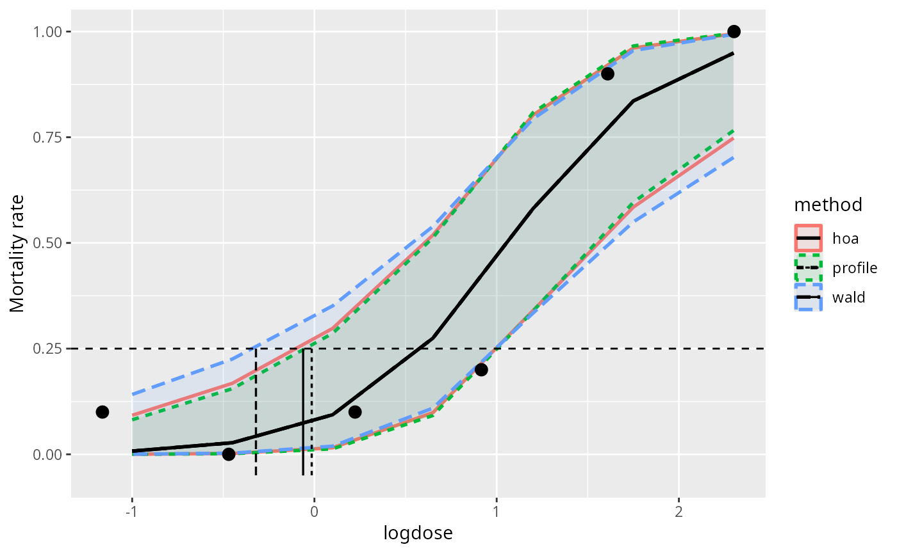

Identifying the lethal dose of a crop protection product.
toxinLD.RdIncreasing dose levels of a toxin, used as a pesticide for crop protection, is applied to non-target species. The lethal dose should be identified in this experiment. The dataset represents simulated data based on a real experiment.
Format
A data frame with 6 observations on the following 3 variables.
dosea numeric vector denoting the toxin concentration levels
deada numeric vector with the number of dead insects.
alivea numeric vector with the number of surviving insects.
Examples
str(toxinLD)
#> 'data.frame': 6 obs. of 3 variables:
#> $ dose : num 0.312 0.625 1.25 2.5 5 ...
#> $ dead : int 1 0 1 2 9 10
#> $ alive: int 9 9 9 8 1 0
###############################################
# logistic regression on the logarithmic dose #
###############################################
toxinLD$logdose <- log(toxinLD$dose)
fm <- glm(cbind(dead, alive) ~ logdose, data=toxinLD, family=binomial(link="logit"))
#############
# profiling #
#############
# contrast matrix
pdose <- seq(-1,2.3, length=7)
CM <- model.matrix(~ pdose)
# user defined grid to construct profiles
mcpgrid <- matrix(seq(-11,8,length=15), nrow=15, ncol=nrow(CM))
mc <- mcprofile(fm, CM, grid=mcpgrid)
#> Warning: orglm.fit: fitted probabilities numerically 0 or 1 occurred
#> Warning: orglm.fit: fitted probabilities numerically 0 or 1 occurred
#> Warning: orglm.fit: fitted probabilities numerically 0 or 1 occurred
#> Warning: orglm.fit: fitted probabilities numerically 0 or 1 occurred
####################################
## confidence interval calculation #
####################################
# srdp profile
ci <- confint(mc)
ppdat <- data.frame(logdose=pdose)
ppdat$estimate <- fm$family$linkinv(ci$estimate$Estimate)
ppdat$lower <- fm$family$linkinv(ci$confint$lower)
ppdat$upper <- fm$family$linkinv(ci$confint$upper)
ppdat$method <- "profile"
# wald profile
wci <- confint(wald(mc))
wpdat <- ppdat
wpdat$estimate <- fm$family$linkinv(wci$estimate$Estimate)
wpdat$lower <- fm$family$linkinv(wci$confint$lower)
wpdat$upper <- fm$family$linkinv(wci$confint$upper)
wpdat$method <- "wald"
# higher order approximation
hci <- confint(hoa(mc))
hpdat <- ppdat
hpdat$estimate <- fm$family$linkinv(hci$estimate$Estimate)
hpdat$lower <- fm$family$linkinv(hci$confint$lower)
hpdat$upper <- fm$family$linkinv(hci$confint$upper)
hpdat$method <- "hoa"
# combine results
pdat <- rbind(ppdat, wpdat, hpdat)
#####################################
# estimating the lethal dose LD(25) #
#####################################
ld <- 0.25
pspf <- splinefun(ppdat$upper, pdose)
pll <- pspf(ld)
wspf <- splinefun(wpdat$upper, pdose)
wll <- wspf(ld)
hspf <- splinefun(hpdat$upper, pdose)
hll <- hspf(ld)
ldest <- data.frame(limit=c(pll, wll, hll), method=c("profile","wald", "hoa"))
################################
# plot of intervals and LD(25) #
################################
library(ggplot2)
ggplot(toxinLD, aes(x=logdose, y=dead/(dead+alive))) +
geom_ribbon(data=pdat, aes(y=estimate, ymin=lower, ymax=upper,
fill=method, colour=method, linetype=method),
alpha=0.1, linewidth=0.95) +
geom_line(data=pdat, aes(y=estimate, linetype=method), linewidth=0.95) +
geom_point(size=3) +
geom_hline(yintercept=ld, linetype=2) +
geom_segment(data=ldest, aes(x=limit, xend=limit, y=0.25, yend=-0.05,
linetype=method), linewidth=0.6, colour="grey2") +
ylab("Mortality rate")
